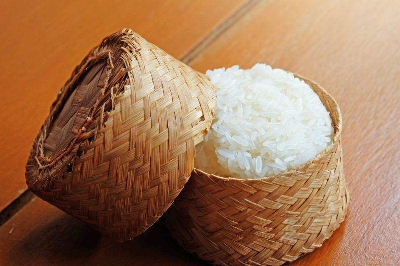
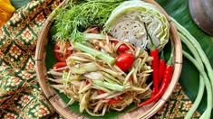
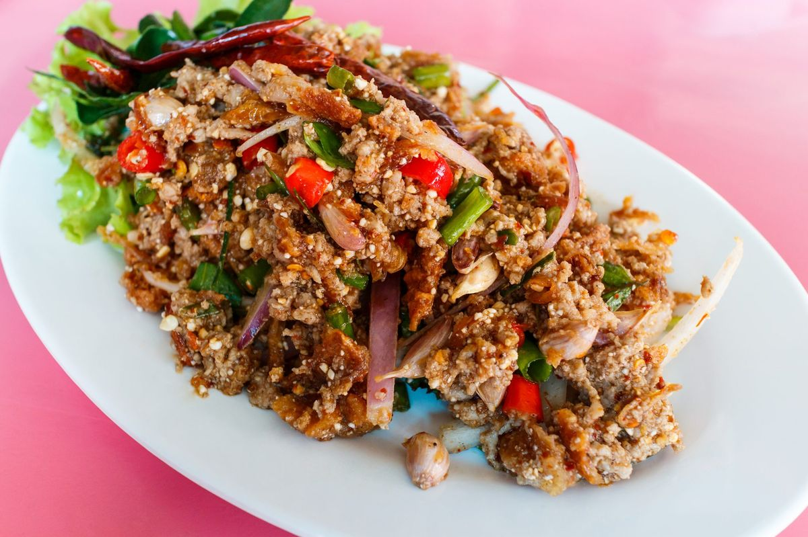
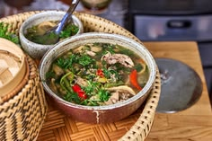
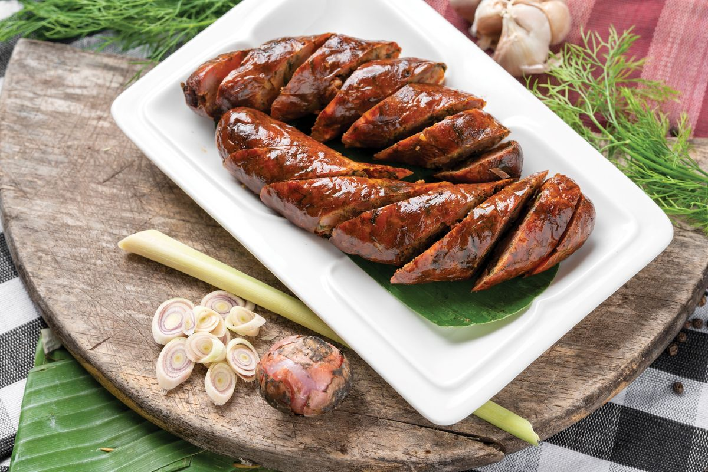
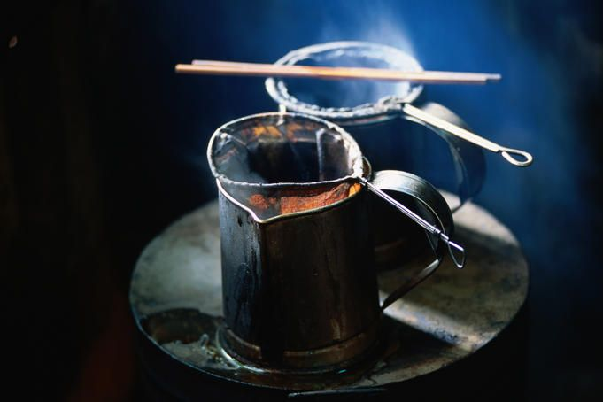

Flavors & Traditions of Laos
Growing up in Pakse, I've always loved sharing the food and customs that make Lao culture so warm and distinct — from sticky rice shared by hand to festivals that bring whole villages together.

Khao Niew (Sticky Rice)
The heart of every Lao meal, steamed in a bamboo basket and eaten by hand alongside almost every dish.

Tam Mak Hoong
Spicy green papaya salad pounded with chili, lime, fish sauce, and tomatoes — bold, tangy, and refreshing.

Laap
Lao's national dish: minced meat or fish tossed with herbs, lime, toasted rice powder, and chili.

Or Lam
A hearty stew from Luang Prabang with buffalo skin, eggplant, and the distinctive "sakhaan" wood pepper.

Sai Oua
Grilled Lao herbed sausage packed with lemongrass, galangal, and kaffir lime leaf.

Lao Coffee
Rich, dark-roasted coffee from the Bolaven Plateau near Pakse, often served with condensed milk.
Boun Pi Mai
Lao New Year — days of water-splashing, sand stupas, and family blessings.
Boun Awk Phansa
End of Buddhist Lent, marked by candlelit boat processions along the rivers.
Boun That Luang
A week-long festival at Vientiane's golden stupa with processions, markets, and fireworks.